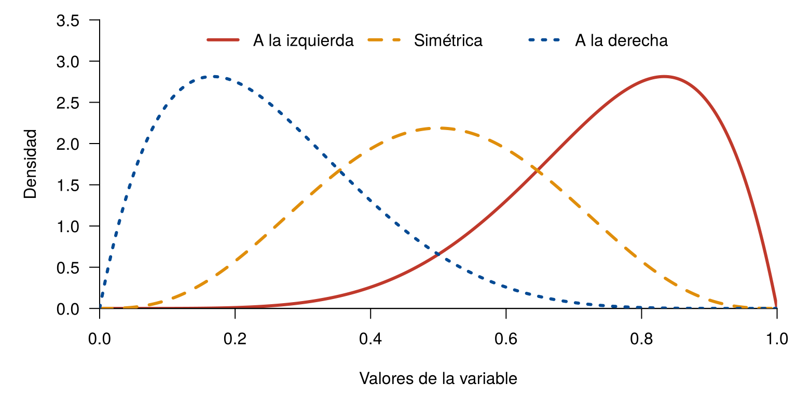
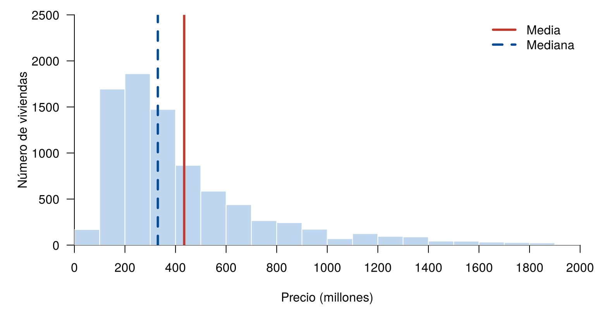
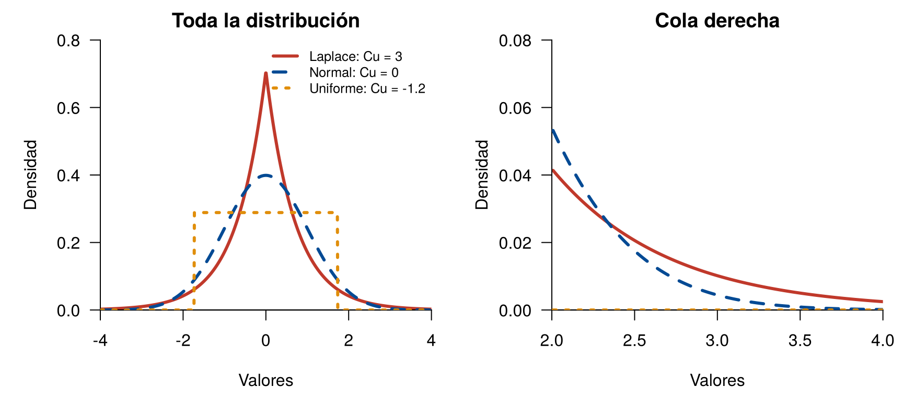

Dos variables pueden tener la misma media y la misma desviación estándar, y aun así tener distribuciones distintas. Los indicadores de forma complementan a los de centro, posición y dispersión, porque describen la simetría de la distribución y el peso de sus colas.
Esta página usa CarreraLuz22 y
vivienda_faltantes, del paquete
paqueteMETODOS. Los bloques de código se ejecutan en orden,
porque algunos usan objetos creados en bloques anteriores.
library(paqueteMETODOS)
data("CarreraLuz22")
data("vivienda_faltantes")El coeficiente de asimetría mide si los datos se reparten de forma simétrica alrededor de la media, o si tienen una cola más larga hacia un lado:
\[ As = \frac{1}{s^3} \left( \frac{1}{n} \sum_{i=1}^{n} (x_i - \bar{x})^3 \right) \]
donde \(\bar{x}\) es la media, \(s\) es la desviación estándar y \(n\) es el número de datos. Al elevar al cubo, las desviaciones conservan su signo, y las grandes pesan más.
| Valor de \(As\) | Distribución | Cola más larga |
|---|---|---|
| \(As = 0\) | Simétrica | Ninguna |
| \(As < 0\) | Asimétrica a la izquierda | Hacia la izquierda |
| \(As > 0\) | Asimétrica a la derecha | Hacia la derecha |
x <- seq(0, 1, length.out = 300)
par(mar = c(4.5, 5, 1, 1))
plot(x, dbeta(x, 6, 2), type = "l", lwd = 3, col = "#C0392B", las = 1,
xlim = c(0, 1), ylim = c(0, 3.5), xaxs = "i", yaxs = "i", bty = "l",
xlab = "Valores de la variable", ylab = "Densidad")
lines(x, dbeta(x, 4, 4), lwd = 3, col = "#E08E0B", lty = 2)
lines(x, dbeta(x, 2, 6), lwd = 3, col = "#034A94", lty = 3)
legend("top", horiz = TRUE, bty = "n", lwd = 3, lty = 1:3,
col = c("#C0392B", "#E08E0B", "#034A94"),
legend = c("A la izquierda", "Simétrica", "A la derecha"))
Formas de la asimetría
Se puede aplicar la fórmula, o usar el paquete
e1071.
¿Qué problema resuelve? La base de R no tiene funciones para la asimetría y la curtosis.
¿Qué hace? e1071 trae, entre otras
funciones, skewness() para la asimetría y
kurtosis() para la curtosis.
¿Cómo se usa?
install.packages("e1071") # solo la primera vezlibrary(e1071)
datos <- c(41.67, 42.23, 45.53, 50.82, 52.93, 57.03,
61.13, 62.48, 72.77, 75.58, 76.98, 78.05)
mean((datos - mean(datos))^3) / sd(datos)^3 # aplicando la fórmula[1] 0.07062934skewness(datos) # con la función[1] 0.07062934El resultado es cercano a cero, así que estos datos son aproximadamente simétricos.
¿Cuándo usarlo? Cuando se quiera resumir la forma de
una variable. Existen varias fórmulas (Joanes y Gill, 1998), y
skewness() usa por defecto la de esta página. Con otro
programa, el valor puede cambiar un poco.
Los tiempos de la carrera y los precios de las viviendas tienen una cola hacia la derecha:
tiempo <- CarreraLuz22$timerun / 60
precio <- na.omit(vivienda_faltantes$preciom)
c(tiempo = skewness(tiempo), precio = skewness(precio)) tiempo precio
0.6864325 1.8474402 cortes <- seq(0, 2000, by = 100)
par(mar = c(4.5, 5, 1, 1))
hist(precio, breaks = cortes, col = "#BFD7EE", border = "white", las = 1,
xlim = range(cortes), ylim = c(0, 2500), xaxp = c(0, 2000, 10),
xaxs = "i", yaxs = "i", main = "",
xlab = "Precio (millones)", ylab = "Número de viviendas")
abline(v = mean(precio), col = "#C0392B", lwd = 3)
abline(v = median(precio), col = "#034A94", lwd = 3, lty = 2)
legend("topright", legend = c("Media", "Mediana"), col = c("#C0392B", "#034A94"),
lwd = 3, lty = c(1, 2), bty = "n")
Precios de las viviendas, con su media y su mediana
La media de los precios es de 434.2 millones y la mediana, de 330. La cola derecha aleja la media hacia los valores altos. Por eso, en esta variable se prefiere reportar la mediana.
Los puntajes de una prueba permiten ver lo que indica la asimetría. Estos casos son ilustrativos:
| Forma | Qué indica |
|---|---|
| Asimétrica a la izquierda | Muchos obtuvieron puntajes altos y pocos, bajos |
| Simétrica | Los puntajes se ubican alrededor de la media |
| Asimétrica a la derecha | Muchos obtuvieron puntajes bajos y pocos, altos |
Suele decirse que, si la asimetría es positiva, la media es mayor que la mediana. Esa regla sirve con frecuencia, como en los ejemplos anteriores, pero no siempre se cumple, sobre todo con variables discretas. Por eso, conviene mirar también la distribución.
El coeficiente de curtosis se relaciona con el peso de las colas de una distribución, es decir, con la presencia de valores extremos, en comparación con una distribución normal:
\[ Cu = \frac{1}{s^4} \left( \frac{1}{n} \sum_{i=1}^{n} (x_i - \bar{x})^4 \right) - 3 \]
Al elevar a la cuarta potencia, los valores más alejados de la media pesan mucho más. Se resta 3 para que la distribución normal tenga \(Cu = 0\).
| Valor de \(Cu\) | Distribución | Qué indica |
|---|---|---|
| \(Cu > 0\) | Leptocúrtica | Colas más pesadas que las de la normal |
| \(Cu = 0\) | Mesocúrtica | Colas similares a las de la normal |
| \(Cu < 0\) | Platicúrtica | Colas más livianas que las de la normal |
Durante años se explicó así, pero Westfall (2014) muestra que dice muy poco sobre el pico. Su interpretación clara se refiere a las colas: en una muestra, a los valores atípicos; y en una distribución, a su propensión a producirlos.
Las tres distribuciones de la figura tienen media 0 y varianza 1. El panel derecho amplía la cola:
x <- seq(-4, 4, length.out = 800)
laplace <- exp(-sqrt(2) * abs(x)) / sqrt(2)
normal <- dnorm(x)
uniforme <- ifelse(abs(x) <= sqrt(3), 1 / (2 * sqrt(3)), 0)
colores <- c("#C0392B", "#034A94", "#E08E0B")
par(mfrow = c(1, 2), mar = c(4.5, 5, 2, 1))
plot(x, laplace, type = "l", lwd = 3, col = colores[1], las = 1, bty = "l",
xlim = c(-4, 4), ylim = c(0, 0.8), xaxs = "i", yaxs = "i",
xlab = "Valores", ylab = "Densidad", main = "Toda la distribución")
lines(x, normal, lwd = 3, col = colores[2], lty = 2)
lines(x, uniforme, lwd = 3, col = colores[3], lty = 3)
legend("topright", bty = "n", lwd = 3, lty = 1:3, col = colores, cex = 0.8,
legend = c("Laplace: Cu = 3", "Normal: Cu = 0", "Uniforme: Cu = -1.2"))
cola <- x >= 2
plot(x[cola], laplace[cola], type = "l", lwd = 3, col = colores[1], las = 1, bty = "l",
xlim = c(2, 4), ylim = c(0, 0.08), xaxs = "i", yaxs = "i",
xlab = "Valores", ylab = "Densidad", main = "Cola derecha")
lines(x[cola], normal[cola], lwd = 3, col = colores[2], lty = 2)
lines(x[cola], uniforme[cola], lwd = 3, col = colores[3], lty = 3)
Distribuciones con igual media y varianza, pero distinta curtosis
par(mfrow = c(1, 1))La función kurtosis() también pertenece al paquete
e1071. Con los mismos datos del ejemplo anterior:
library(e1071)
mean((datos - mean(datos))^4) / sd(datos)^4 - 3 # aplicando la fórmula[1] -1.674344kurtosis(datos) # con la función[1] -1.674344El valor es negativo, por lo que los datos tienen colas más livianas que las de una normal. En cambio, los precios de las viviendas tienen colas pesadas, porque hay valores muy altos:
c(tiempo = kurtosis(tiempo), precio = kurtosis(precio)) tiempo precio
1.889312 3.658214 Por sí solos no bastan para decidir si unos datos siguen una distribución normal: hay que observar también el histograma y el gráfico de cajas.
| Problema | Causa | Solución |
|---|---|---|
could not find function "skewness" |
No se cargó el paquete | Ejecutar library(e1071) |
skewness() da NA |
Hay datos faltantes | Usar na.rm = TRUE |
| El valor no coincide con otro programa | Hay varias fórmulas | Revisar el argumento type |
| Decir que la curtosis mide lo puntiaguda que es la curva | Es una explicación antigua | Interpretarla por las colas |
| Confundir el lado de la asimetría | Se mira el pico, no la cola | El nombre lo da el lado de la cola larga |
| Usar estos indicadores con muy pocos datos | Un solo dato los cambia mucho | Mirar los datos o un gráfico |
Una variable tiene una media de 40, una mediana de 55 y una cola larga hacia los valores bajos. ¿Qué signo espera en su coeficiente de asimetría?
Negativo, porque la cola larga está hacia la izquierda.
Calcule la asimetría y la curtosis de edad en
CarreraLuz22 e interprete los resultados.
c(asimetria = skewness(CarreraLuz22$edad), curtosis = kurtosis(CarreraLuz22$edad))asimetria curtosis
0.6386494 0.1144357 La asimetría es positiva: hay una cola hacia las edades altas. La curtosis es cercana a cero: las colas son similares a las de una normal.
Use tapply() para calcular la asimetría del tiempo según
sex. ¿En qué grupo la cola derecha es más marcada?
tapply(tiempo, CarreraLuz22$sex, skewness) Hombre Mujer
1.0811993 0.3749535 En los hombres, cuya asimetría es mayor.
Calcule la asimetría y la curtosis del tiempo de los hombres con y sin el mayor tiempo de la carrera. ¿Qué concluye?
hombres <- tiempo[CarreraLuz22$sex == "Hombre"]
sin_maximo <- hombres[hombres < max(hombres)]
c(asimetria = skewness(hombres), curtosis = kurtosis(hombres))asimetria curtosis
1.081199 4.504920 c(asimetria = skewness(sin_maximo), curtosis = kurtosis(sin_maximo))asimetria curtosis
0.6403497 0.5359142 Un solo dato cambia mucho los dos coeficientes, y en especial la curtosis. Conviene revisar los valores extremos antes de interpretarlos.
Escriba un párrafo que describa los precios de las viviendas con un indicador de centro, uno de dispersión y uno de forma.
c(mediana = median(precio), Q1 = unname(quantile(precio, 0.25)),
Q3 = unname(quantile(precio, 0.75)), asimetria = skewness(precio)) mediana Q1 Q3 asimetria
330.00000 220.00000 540.00000 1.84744 Una redacción posible es: El precio mediano fue de 330 millones, y la mitad central de los precios estuvo entre 220 y 540 millones. La distribución es asimétrica a la derecha, porque hay viviendas con precios muy altos.
Última revisión: 5 de noviembre de 2026.